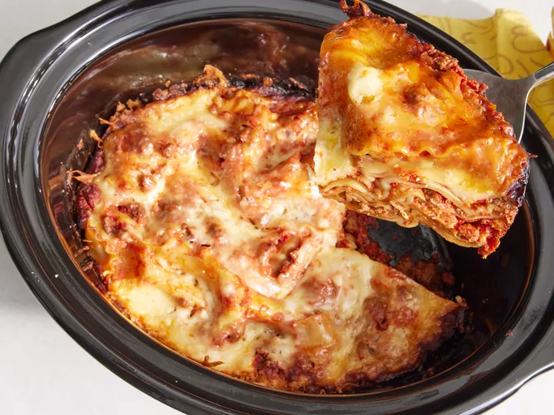

Home
Slow Cooker Lasagna

This crockpot lasagna recipe is so easy, you might think that you missed something.
It is a delicious slow cooker meal!
Ingredients
- 1 (12 oz) package lasagna noodles
- 1 lb lean ground beef
- 1 (29 oz) can tomato sauce
- 1 (6 oz) can tomato paste
- 16 oz shredded mozzarella cheese
- 12 oz cottage cheese
- ½ cup grated Parmesan cheese
- 1 medium onion, chopped
- 2 teaspn minced garlic
- 1 ½ teaspn salt
- 1 teaspn dried oregano
Steps
- Cook ground beef, onion, and garlic in a large skillet over medium heat
until the meat is browned
- Add tomato sauce, tomato paste, salt, and oregano. Stir until
well-combined and heated through.
- Stir mozzarella, cottage cheese, and Parmesan together in a large
separate bowl.
- Spoon a layer of the meat mixture onto the bottom of a slow cooker.
- Add a double layer of uncooked lasagna noodles, breaking noodles to fit
into cooker as needed.
- Repeat the layering of sauce, noodles, and cheese until all ingredients are
used.
- Cover and cook on low until lasagna noodles are tender, ~4-6 hrs.
Home